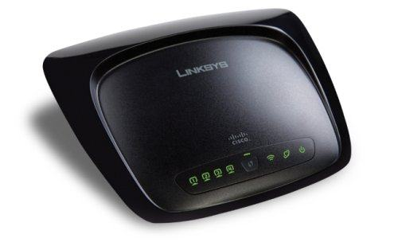

7.5 Internetschicht: IP-Adressierung und Routing
Eine Anfrage von deinem Handy in Dresden an einen Server in Kalifornien durchläuft rund 15 bis 20 Router. Keiner davon kennt den ganzen Weg – jeder weiß nur, an wen er das Paket als Nächstes weitergibt. Wie das mit IP-Adressen und Routingtabellen funktioniert, zeigt diese Seite.
Die Internetschicht (im OSI-Modell: Vermittlungsschicht) ist dafür verantwortlich, Datenpakete von einem Host zu einem anderen über verschiedene Netze hinweg zu übertragen. Sie bietet eine universelle Weiterleitungsfunktion, mit der Pakete (IP-Datagramme) unabhängig von der Netzwerktechnologie und der Topologie der einzelnen Teilnetze übermittelt werden können. Während IP-Adressen für die Adressierung und das Routing auf der Internetschicht verwendet werden, sind MAC-Adressen auf der Netzzugangsschicht für die Zustellung innerhalb eines lokalen Netzes zuständig (→ 7.4). Erst das Zusammenspiel beider Adressarten ermöglicht die Zustellung von einem Endgerät zum anderen über viele Netze hinweg.
Aufgaben der Internetschicht
- Adressierung: Geräte werden über logische, hierarchisch aufgebaute IP-Adressen adressiert.
- Routing: Bestimmung des Weges für die Pakete durch die Netze zum Ziel.
- Paketübermittlung: Weiterleitung der Pakete zwischen Netzen und innerhalb eines Netzes.
- Fehlermeldungen und Diagnose: über ICMP (Internet Control Message Protocol) werden Probleme gemeldet und diagnostiziert.
- Fragmentierung und Reassemblierung: Ist ein Paket größer als die maximale Übertragungseinheit (MTU) eines Teilnetzes, wird es in Fragmente aufgeteilt und am Ziel wieder zusammengesetzt.
IPv4-Adressen
Eine IPv4-Adresse besteht aus 32 Bit und wird in vier durch Punkte getrennten Dezimalzahlen von 0 bis 255 geschrieben (z. B. 192.168.1.1). Damit gibt es 232 ≈ 4,3 Milliarden Adressen. Jede Adresse besteht aus einem Netzanteil (welches Netz?) und einem Hostanteil (welches Gerät in diesem Netz?). Wo die Grenze liegt, legt die Subnetzmaske bzw. die Präfixlänge fest, z. B. 192.168.1.1/24: Die ersten 24 Bit bilden den Netzanteil (genauer → 7.6).
Innerhalb eines Netzes muss jede IP-Adresse eindeutig sein. Für lokale Netze sind private Adressbereiche reserviert, die im Internet nicht weitergeleitet werden und deshalb in vielen Netzen gleichzeitig vorkommen dürfen: 10.0.0.0/8, 172.16.0.0/12 und 192.168.0.0/16. Der Heimrouter übersetzt sie beim Weg ins Internet in seine öffentliche Adresse (NAT, Network Address Translation).
IPv6-Grundlagen
IPv6 wurde eingeführt, weil die IPv4-Adressen knapp geworden sind. IPv6-Adressen bestehen aus 128 Bit (2128 ≈ 3,4 · 1038 Adressen) und werden in acht Gruppen zu je vier Hexadezimalziffern geschrieben, z. B. 2001:0db8:85a3:0000:0000:8a2e:0370:7334. Zur Verkürzung gelten zwei Regeln:
- Führende Nullen in einer Gruppe dürfen weggelassen werden (
0db8→db8,0000→0). - Einmal pro Adresse darf eine Folge von Nullgruppen durch
::ersetzt werden.
Die Beispieladresse lautet verkürzt 2001:db8:85a3::8a2e:370:7334. In lokalen Netzen sind die ersten 64 Bit meist das Netzpräfix (/64), die letzten 64 Bit die Interface-ID. Weitere Unterschiede zu IPv4:
- Geräte können sich selbst eine Adresse bilden (SLAAC, Stateless Address Autoconfiguration); DHCPv6 ist optional.
- Jede Schnittstelle hat zusätzlich eine link-lokale Adresse (
fe80::/10), die nur im eigenen Netzabschnitt gilt.::1ist die Loopback-Adresse (bei IPv4: 127.0.0.1). - Es gibt keinen Broadcast mehr, stattdessen Multicast. NAT ist wegen der vielen Adressen normalerweise nicht nötig.
Standard-Gateway
Ein Host prüft vor dem Senden, ob die Ziel-IP-Adresse in seinem eigenen Netz liegt (AND-Verknüpfung mit der Subnetzmaske, → 7.6). Liegt sie im eigenen Netz, stellt er das Paket direkt zu. Andernfalls schickt er es an sein Standard-Gateway: den Router im eigenen Netz, der den Weg nach draußen kennt. Die Adresse des Standard-Gateways muss deshalb im selben Netz liegen wie der Host.
Gateway im weiteren Sinn: Der Begriff „Gateway“ wird außerdem für Geräte oder Programme verwendet, die zwischen Netzen mit unterschiedlichen Protokollen übersetzen (Anwendungs-Gateway). Beispiele sind ein E-Mail-Gateway, das E-Mails zwischen dem Internet und einem internen Mailsystem übermittelt, oder ein VoIP-Gateway, das Telefonanrufe zwischen dem klassischen Telefonnetz und einem VoIP-Netz umsetzt. Das Standard-Gateway eines Hosts übersetzt dagegen keine Protokolle, es ist einfach der nächste Router.
Routingtabellen
Routingtabellen sind in Routern (und auch in jedem Host) gespeichert und legen fest, wohin Pakete für ein bestimmtes Zielnetz weitergeleitet werden. Ein Eintrag enthält mindestens:
- Zielnetz mit Subnetzmaske bzw. Präfixlänge: das Netz, für das der Eintrag gilt, z. B. 10.1.0.0/16.
- Next Hop (nächstes Gateway): die IP-Adresse des nächsten Routers auf dem Weg zum Ziel. Bei direkt angeschlossenen Netzen entfällt er („direkt“).
- Schnittstelle: die Netzwerkschnittstelle, über die das Paket gesendet wird.
- oft eine Metrik: ein Maß für die „Kosten“ des Weges, falls mehrere Wege zur Auswahl stehen.
Der Eintrag 0.0.0.0/0 heißt Default-Route: Er passt auf jede Adresse und wird verwendet, wenn kein genauerer Eintrag existiert.
Routing
Routing ist der Prozess, für jedes Paket den Weg durch das Netz vom Ursprung zum Ziel zu bestimmen. Empfängt ein Router ein Paket, vergleicht er die Ziel-IP-Adresse mit allen Einträgen seiner Routingtabelle. Passen mehrere Einträge, gewinnt der mit dem längsten Präfix, also der genaueste (Longest-Prefix-Match). Dann verringert der Router die TTL (Time to Live) des Pakets um 1 – erreicht sie 0, wird das Paket verworfen, damit es nicht endlos kreist – und sendet es über die gefundene Schnittstelle an den Next Hop bzw. direkt an das Ziel.
Routing-Protokolle
Routingtabellen können von Hand eingetragen werden (statisches Routing) oder von den Routern selbst über Routing-Protokolle ausgetauscht werden (dynamisches Routing). OSPF (Open Shortest Path First) wird innerhalb der Netze eines Betreibers verwendet und berechnet kürzeste Wege. BGP (Border Gateway Protocol) verbindet die Netze verschiedener Betreiber (autonome Systeme) im Internet. BGP dient zwar der Internetschicht, ist selbst aber ein Anwendungsprotokoll, das über TCP (Port 179) läuft.
Zur Einordnung: DHCP vergibt IP-Adressen, gehört aber nicht zur Internetschicht, sondern ist ein Anwendungsprotokoll über UDP (Ports 67/68, → 7.7). ARP verbindet IP- und MAC-Adressen und liegt an der Grenze zur Netzzugangsschicht (→ 7.4).
ICMP (Internet Control Message Protocol)
ICMP wird für Diagnose- und Fehlermeldungen verwendet. Damit teilen Router und Hosts Probleme bei der Paketzustellung mit, z. B. „Ziel nicht erreichbar“ oder „Zeitüberschreitung“ (TTL abgelaufen). Auch ping (Echo Request/Echo Reply) und traceroute bzw. tracert beruhen auf ICMP.
Schnittstellen
Eine Schnittstelle (Netzwerkschnittstelle, Interface) ist der Punkt, über den ein Gerät (Computer, Router) mit einem Netz verbunden ist, z. B. eine Netzwerkkarte, ein WLAN-Adapter oder ein virtueller Adapter. Jede Schnittstelle hat eine eigene MAC-Adresse und eine oder mehrere IP-Adressen. Ein Router hat mindestens zwei Schnittstellen in verschiedenen Netzen.
- Typen: physische Anschlüsse (wie die Ethernet-Ports eines Routers) und virtuelle Schnittstellen (z. B. für VLANs auf einem Switch oder für einen VPN-Tunnel).
- Funktion: Sie sind Eingangs- und Ausgangspunkte für den Datenverkehr eines Geräts; in der Routingtabelle steht zu jedem Zielnetz, über welche Schnittstelle gesendet wird.
Praxisbezug: Der Router zu Hause und das Routing in der Firma

Abb. 1: Heimrouter verschiedener Hersteller
Alltag: Heimrouter wie ein Speedport der Telekom oder ein Linksys-Router sind eigentlich mehrere Geräte in einem: Router und Standard-Gateway für das Heimnetz, NAT (alle Geräte teilen sich eine öffentliche IPv4-Adresse), DHCP-Server (→ 7.7), Switch, WLAN-Access-Point und oft auch Modem. Mit tracert www.tu-dresden.de (Windows) kannst du dir die Router auf dem Weg ansehen – der erste Hop ist immer dein Heimrouter.
Beruf: Netzwerkadministratorinnen und -administratoren sowie Fachinformatikerinnen und Fachinformatiker für Systemintegration richten in Firmen mit mehreren Standorten Routen und VPN-Verbindungen ein. Typisches Ticket: „Der Standort Chemnitz erreicht den Dateiserver in Dresden nicht.“ Mit ping und traceroute wird festgestellt, an welchem Router die Pakete hängen bleiben; oft fehlt eine Route oder ein Next Hop ist falsch eingetragen.
Das Wichtigste
IP-Adresse: logische Adresse einer Netzwerkschnittstelle aus Netzanteil und Hostanteil (IPv4: 32 Bit, IPv6: 128 Bit). Anders als die MAC-Adresse bleibt sie auf dem ganzen Weg vom Sender zum Empfänger erhalten (ohne NAT).
Standard-Gateway: der Router im eigenen Netz, an den ein Host alle Pakete schickt, deren Ziel außerhalb des eigenen Netzes liegt.
Routing: Jeder Router entscheidet nur über den nächsten Router (Next Hop), nicht über den ganzen Weg.
Longest-Prefix-Match: Passen mehrere Einträge der Routingtabelle, gilt der mit dem längsten Präfix. Die Default-Route 0.0.0.0/0 greift nur, wenn nichts Genaueres passt.
Grundaufgaben
Aufgabe 7.5.1: Grundbegriffe und IPv6 AFB I
- Erkläre die Begriffe Standard-Gateway und Next Hop in je einem Satz.
- Verkürze die IPv6-Adressen
2001:0db8:0000:0000:0000:0000:0000:0001undfe80:0000:0000:0000:0a1b:00ff:fe2c:0003. - Welche der Adressen 10.4.2.1, 172.20.5.5, 172.32.0.1 und 192.168.178.34 sind privat?
Aufgabe 7.5.2: Routingentscheidungen AFB II
Verwende die Routingtabelle aus dem komplexen Beispiel. Gib für die Ziele 10.1.2.200, 10.1.3.1, 10.0.0.1 und 172.16.0.1 an, welcher Eintrag verwendet wird, und begründe mit dem Longest-Prefix-Match. Erkläre außerdem, was passiert, wenn der Eintrag 10.1.0.0/16 gelöscht wird.
Das kann ich jetzt
Grau steht, was der Lehrplan verlangt, darunter, was das für dieses Thema konkret heißt. Hake einen Punkt ab, wenn er in deinem Hefter zusammengefasst ist und du ihn ohne Hilfe kannst. Wie du ihn zusammenfasst, entscheidest du selbst. Die Haken speichert nur dein Browser.
Lehrplan LB 7 Adressierung und Routing mittels Internetprotokoll (Übertragen der Kenntnisse zum Aufbau von Rechnernetzen auf die Modellierung von Netzwerken)